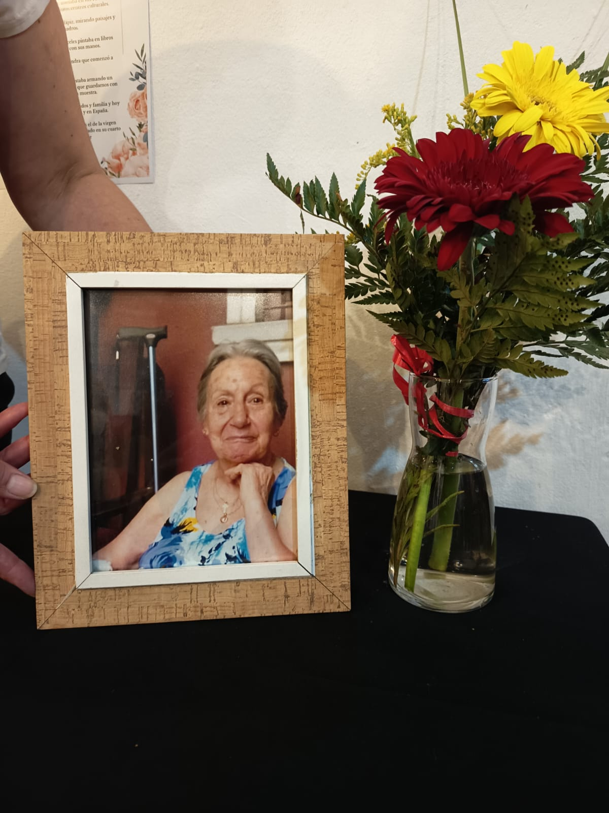
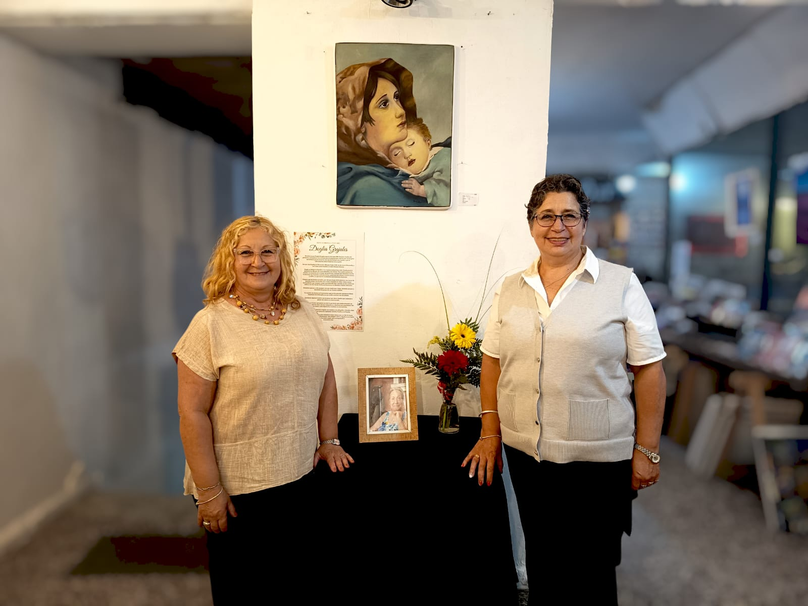
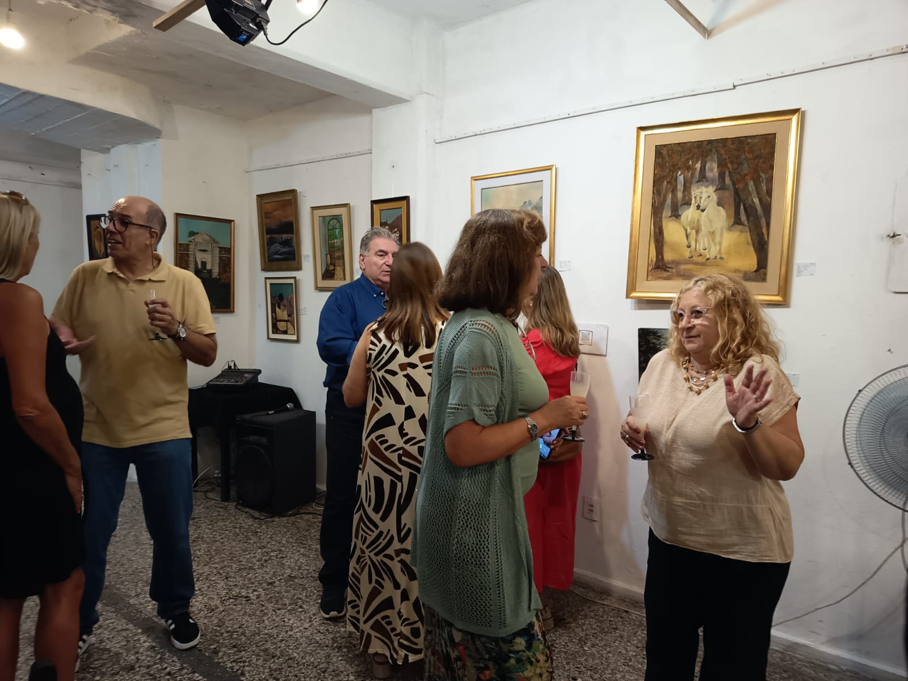
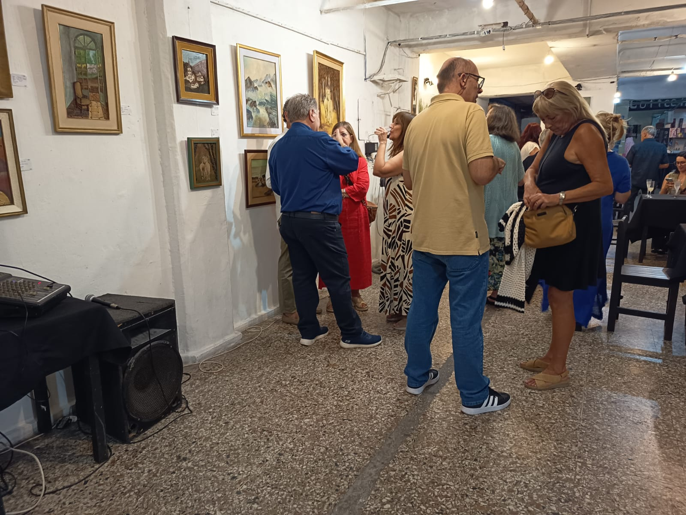
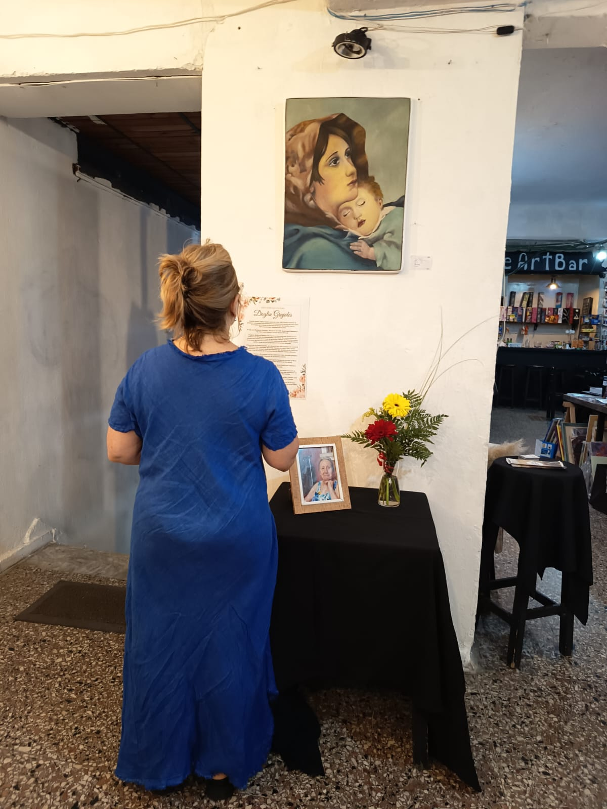
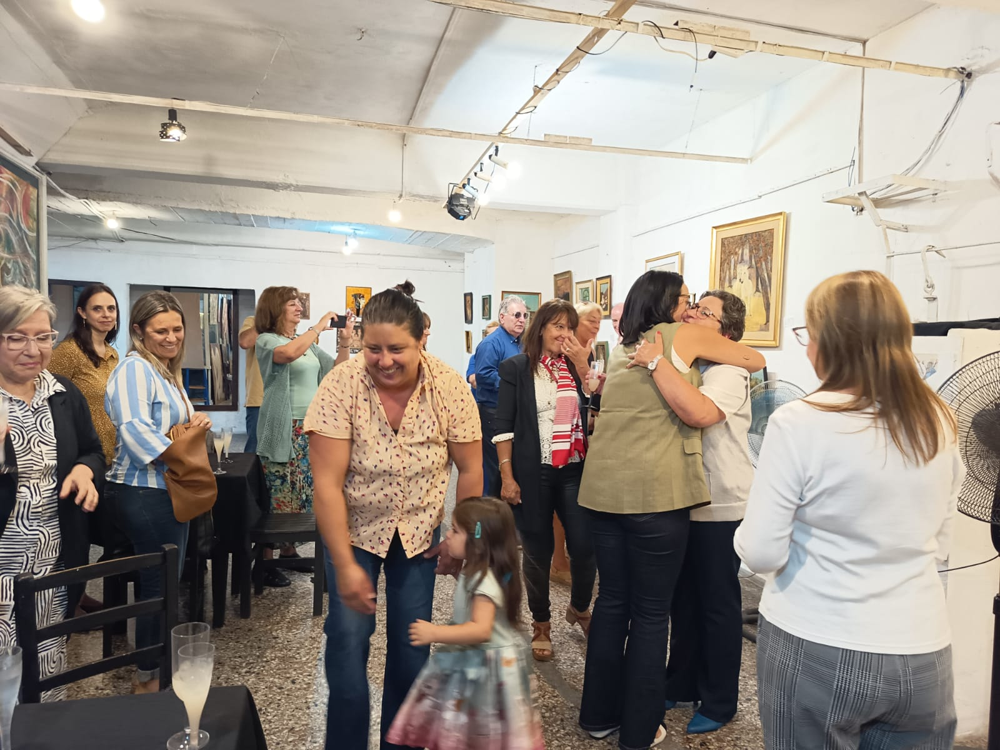
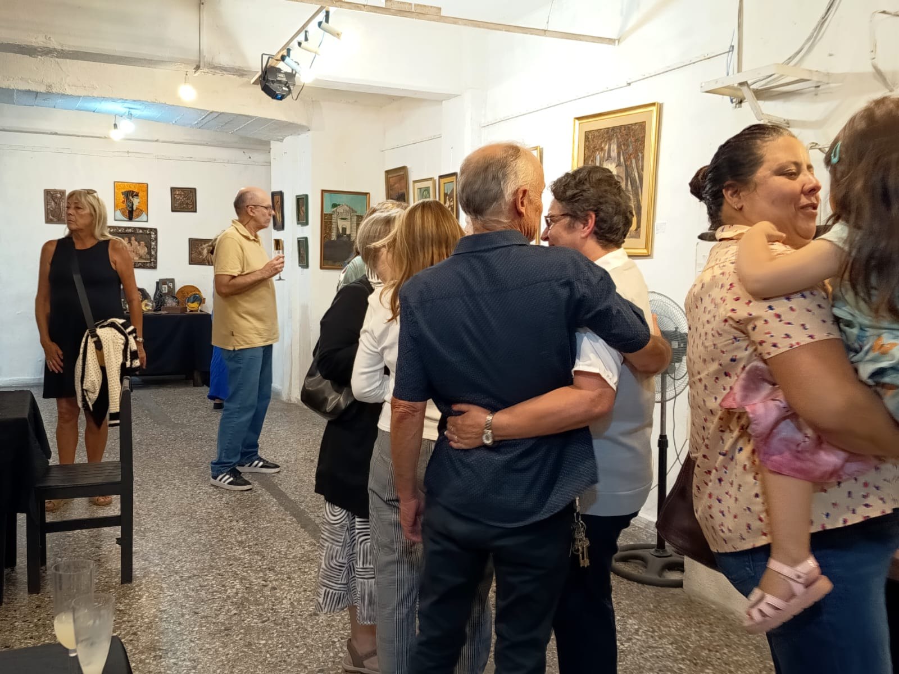
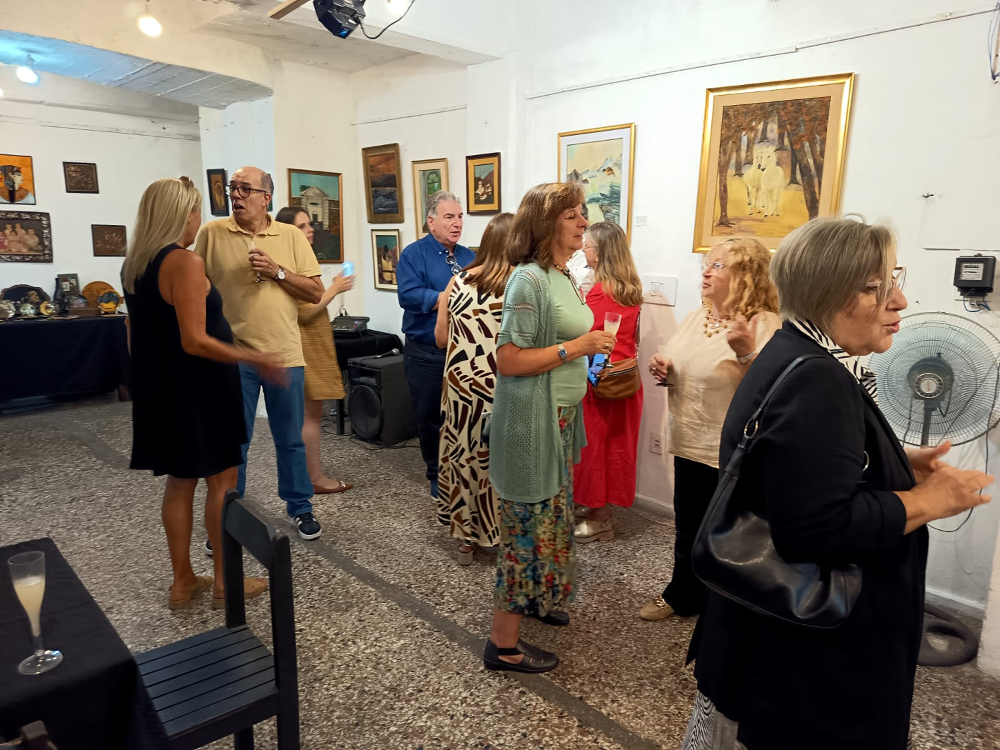
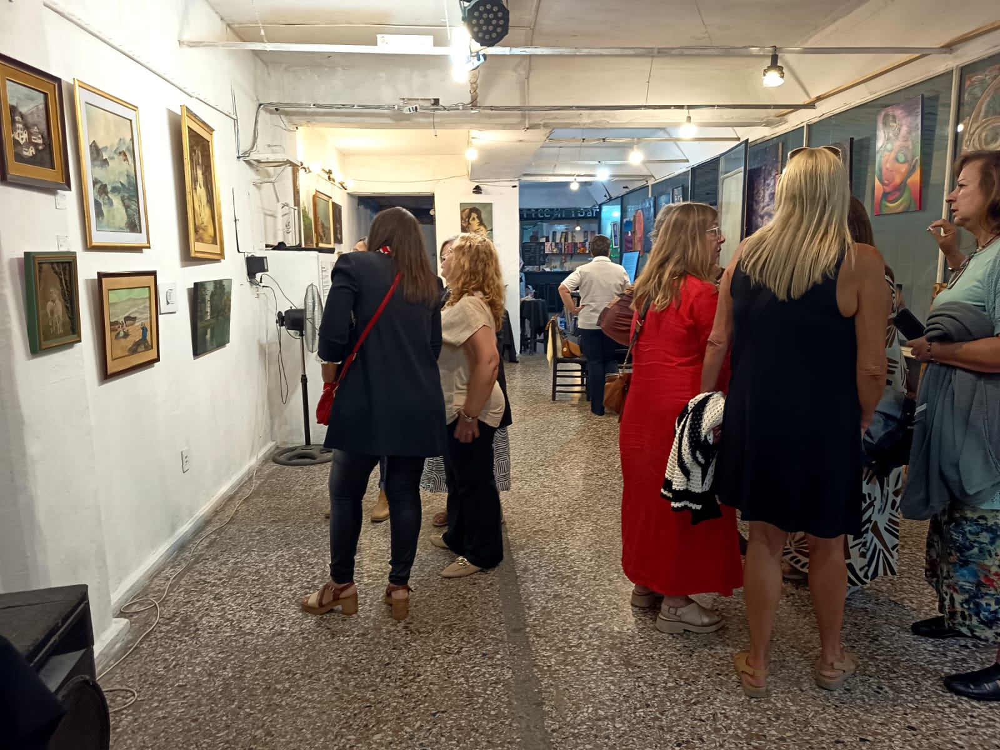
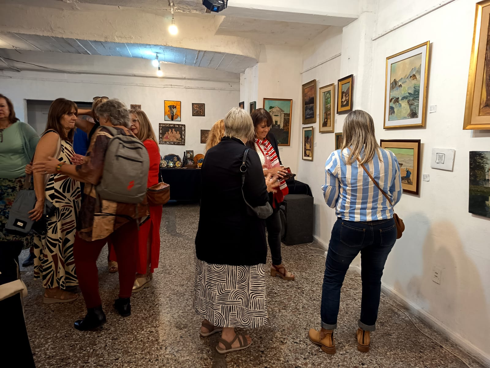

La familia de Doglia, principalmente sus hijas Marianela y Sandra Nacaratto (socia de Espacio Interactivo Delondon) organizan esta expo como un homenaje postumo a la trayectoria de Doglia como Artista, facilitadora de talleres y artesana.










Entrada libre para todo público. Te esperamos con obras y propuestas de nuestros socios: piezas en acervo a precios muy accesibles (efectivo, débito y crédito). Además, nuestro CoffeeArtBar estará abierto con delicias caseras preparadas por la comunidad. Ven a compartir una noche de arte, encuentro y buena música.

"Nuestra mamá Doglia Grajales nació en el año 1938. Realizó estudios de primaria y secundaria con orientación en arquitectura, carrera que inició pero no terminó por tomar la elección de formar una familia y por el fallecimiento muy temprano de su padre.
Se casó con Humberto Nacaratto allá por el año 1958; al año nació Marianela, a los 5 años nació Sandra y 6 años después Rosana.
Doglia se dedicó a su familia y era experta en hacernos todo. Desde joven le gustaron los dibujos, las manualidades y la costura; Nos confeccionaba los vestidos con modelos de revistas, tan perfectos y bonitos que llamaban mucho la atención, nos hacía las carátulas de los cuadernos del colegio y los de música y solfeo, ya que las tres tocábamos instrumentos musicales.
Después que ya éramos grandes, por ahí por el año 1978 comenzó con cursos de pintura al óleo, texturados, laca vitral, repujado en cobre, velas y tantas manualidades que siempre estaba aprendiendo algo; anotaba en sus cuadernos todo y a su vez enseñó de forma honoraria en distintos centros culturales.
Salíamos a pasear y ella siempre con su cuaderno y lápiz, mirando paisajes y haciendo bosquejos de sus futuros cuadros.
Ya cuando sus manos no le permitían agarrar los pinceles, pintaba en libros mandalas con fibras gruesas que podía sostener con sus manos.
Quedaron algunos cuadros sin terminar que ahora Sandra comenzó a pintar y los estuvo reconstruyendo.
Era tanto el amor que ponía en todo lo que hacía, que estaba armando un álbum con todas las fotos con sus compañeras y alumnos, que guardamos con mucho cariño y que exponemos también en esta muestra.
Al sentirse mayor comenzó a regalar sus cuadros a sus allegados y familia y hoy estos están con sus nietas en Argentina, Estados Unidos y en España.
Pero hay un cuadro que para nosotras es muy valioso que es el de la virgen María con el niño Jesús, 'Madonnina' este siempre estuvo colgado en su cuarto y es el que se fue junto a papá para acompañarlo en su nueva casa"
Sandra Nacaratto y Marianela Nacaratto
Blog
Explora nuestro blog para enterarte sobre arte y mucho más. ¡Mantente al día con la escena artística local y global!
Visita el blogExposiciones
Consulta nuestra agenda de exposiciones y eventos.
CarteleraContacto
Para más información, no dudes en ponerte en contacto con nosotros:
aespaciointeractivo@gmail.com